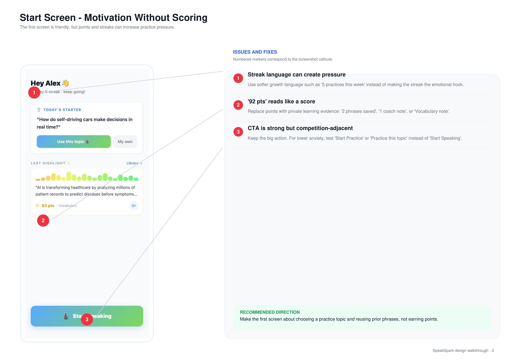
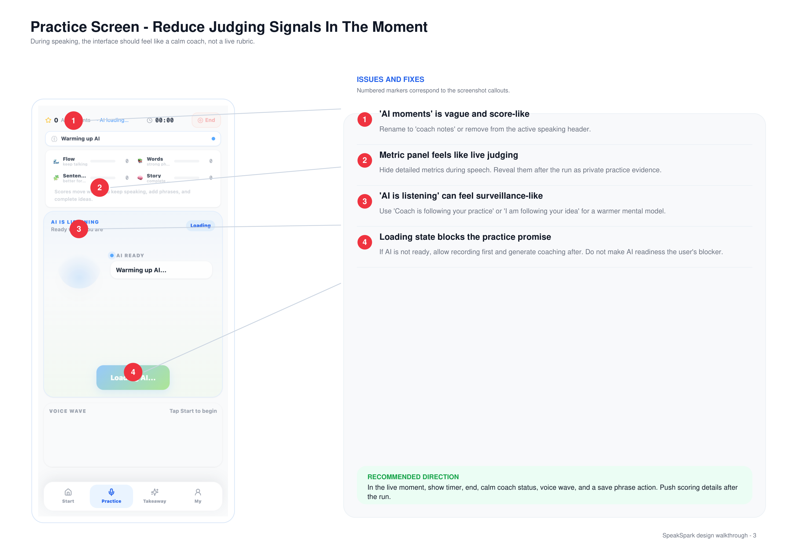
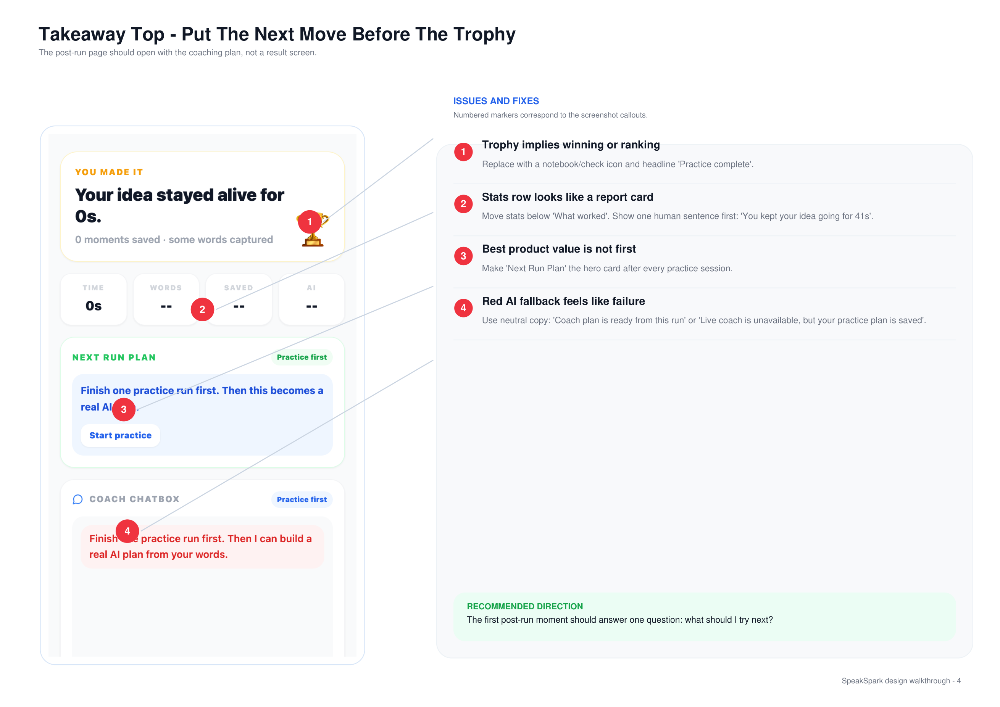
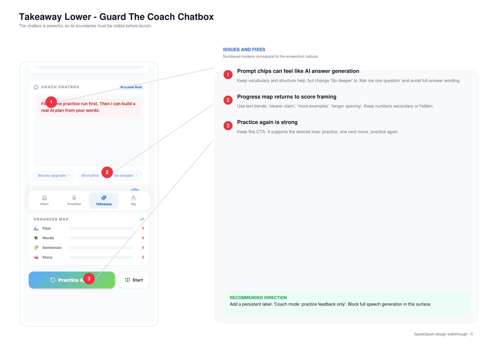
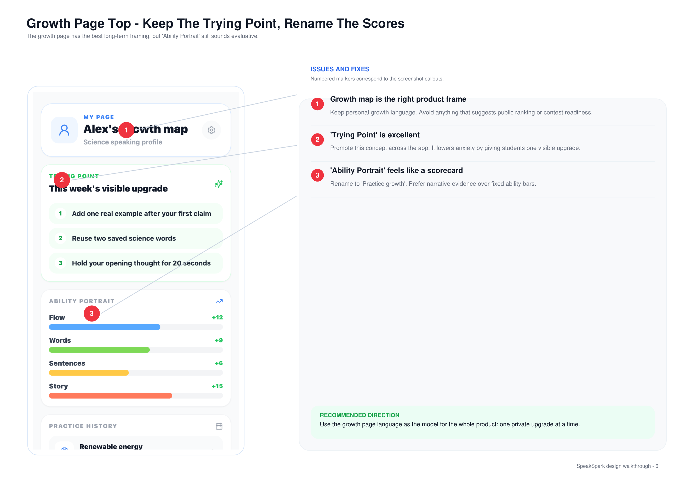
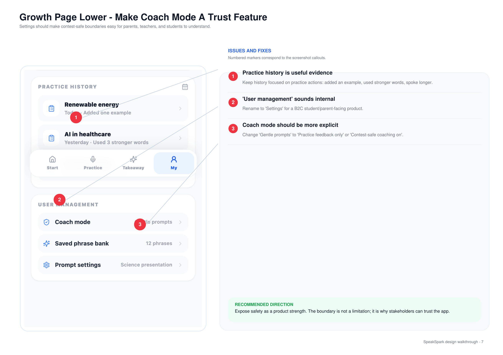

把 2026-05-06 的标注走查 PDF 原样放在左边，右边是我们这一阶段对每个红色标注点（①②③④）的回应：怎么改的、状态、对应提交、以及新状态的截图位。
PRIMARY RISK
UI 容易被读成评分、评判或比赛准备。
PRODUCT DIRECTION
把 SpeakSpark 定位成私人练习教练，不是评分者。
LAUNCH RULE
只做 coach process：prompts、frames、词汇选择、一个 next-run plan。
AVOID
完整演讲、比赛分数、排名语言、实时纠错、暴露 AI provider 报错。
2026-06-14 实测 Supabase 后台 jyofoabobuwfowpctbfd 已失效（nslookup 返回 NXDOMAIN，免费版长期不活动被回收）。前端所有 Gemini 调用在网络层失败，AI 总结 / 实时追问全程走本地兜底。前端与函数源码均无问题——凡标灰蓝色的项都是"代码已就绪、待后台恢复即生效"。
首屏友好，但分数/streak 会带来练习压力。
📄 原走查 · 反馈方

我们的回应 · OUR RESPONSE （编号对应左图红点）
原建议：用 "5 practices this week" 代替 streak 作情感钩子。
🟡 首页目前仍是 "Day 5 streak"，下一步改成学习证据型钩子。
原建议：换成 "2 phrases saved / 1 coach note" 这类证据。
🟡 仍显示 pts，待替换为练习证据。
原建议：测 "Start Practice" / "Practice this topic"。
🟡 仍为 "Start Speaking"，待 A/B。
新用户进首页弹 3 步引导（模式 / 今日话题 / Start），只出一次。63b78d4
SHOT H-HOME · H-TOUR
首页（模式+今日话题）/ 首页引导气泡
路由 #/；引导：清 speakspark.homeOnboarded 后进首页
说话当下，界面应像冷静的教练，不是实时评分表。
📄 原走查 · 反馈方

我们的回应 · OUR RESPONSE （编号对应左图红点）
原建议：改 "coach notes" 或移除。
✅ 直接删掉左上模糊计数，换成顶部 🎯 当前话题 / 模式。f6392c9
原建议：说话中隐藏详细指标，结束后作 private evidence。
🟡 我们目前保留 KTV 露出并用 Navigator 解释"它是私人信号、不是评分"——和"说话中隐藏"是个取舍，待你拍板。
原建议：改 "Coach is following your practice / your idea"。
✅ 改为 "Coach is following your story" + 猫状态（后去重，状态只在猫下一处）。fa5b2c235472de
原建议：允许先录后生成 coaching，不让 AI 就绪成为阻塞。
✅ 预生成缓冲 + 多层 fallback，不被 AI 就绪阻塞；停顿卡优先真 AI（有缓冲秒弹，无则猫 thinking 再问，断网才本地）。1936038
SHOT P-FULL · P-PAUSE
练习页全景 / 停顿反馈卡（Coach asks · Use it · Skip）
路由 #/practice → Start →（停 ~2.5s）· ⚠️ 真问题需后台恢复
结束页第一屏应该是教练计划，不是成绩单。
📄 原走查 · 反馈方

我们的回应 · OUR RESPONSE （编号对应左图红点）
原建议：换 notebook/check 图标 + "Practice complete"。
✅ 改为 "Practice complete" + 🎉，无奖杯、无排名语言。838a68b
原建议：先显示一句人话 "You kept your idea going for 41s"。
✅ 先一句人话 headline，再谈数据。838a68b
原建议：把 Next Run Plan 提为每次练习后的置顶 hero。
🟡 现放在块② "Level up" 内（"置顶 hero" 这条你之前说先放着）。
原建议：中性文案 "Coach plan is ready from this run"。
✅ 改为中性诚实琥珀提示（这次正是靠它定位到后台失效）。1936038ca2982f
SHOT T-TOP · T-BLOCK1
Takeaway 顶部（Practice complete + headline）+ 块①
路由 #/session-end · ⚠️ 真 AI 总结需后台恢复
Chatbox 很强大，所以它的边界要在上线前明确可见。
📄 原走查 · 反馈方

我们的回应 · OUR RESPONSE （编号对应左图红点）
原建议："Go deeper" → "Ask me one question"，避免整段代答。
✅ presets 改为 "Ask me one question" 等，明确不替你作答。fa5b2c2
原建议：用文字趋势 "clearer claim / more examples / longer opening"，数字次要或隐藏。
✅ 进步改文字趋势（Strong / Growing / Just starting + 成长描述）。4bdaf81
✅ 保留核心循环：练习 → 一个下一步 → 再练。✅ 另加 coach-mode 持久信任标签。
SHOT T-COACH
Takeaway 块③ Coach（chatbox + presets "Ask me one question"）
路由 #/session-end 下滑到底 · ⚠️ 真 AI 回答需后台
成长页框架是对的，但 "Ability Portrait" 仍像评估。
📄 原走查 · 反馈方

我们的回应 · OUR RESPONSE （编号对应左图红点）
✅ 保留个人成长语言，不做公开排名。
原建议：推广这个概念到全 app。
✅ Trying Point 保留在 My 页；🟡 推广到全 app 待办。
原建议：改名 "Practice growth"，偏好叙述证据。
🟡 My 页仍是 "Ability portrait"，下一步改名。rename → Practice growth
SHOT M-TOP
My 页上半（Trying Point + Ability portrait 现状）
路由 #/my
设置页应该让"内容安全边界"对家长/老师/学生都好理解。
📄 原走查 · 反馈方

我们的回应 · OUR RESPONSE （编号对应左图红点）
✅ history 聚焦练习动作（"Added one example / Used 3 stronger words"）。
原建议：改名 "Settings"（面向学生/家长）。
🟡 仍是 "User management"。rename → Settings
原建议："Gentle prompts" → "Practice feedback only" / "Contest-safe coaching on"。
🟡 值仍是 "Gentle prompts"。→ Practice feedback only
SHOT M-LOW
My 页下半（User management / Coach mode 现状）
路由 #/my 下滑
这些是走查 PDF 之外的试用文字反馈，多数落在练习页/首页，已与上面联动实现。
原问题
多行字幕信息过载；噪音环境 End 按钮被挤无法点。
我们怎么改
提词器式字幕：当前句锁中间、旧句上滚淡出、固定高度；End 固定在顶栏不随字幕移动。
原问题
音浪+字幕+气泡+KTV+卡片，动态元素太多分心。
我们怎么改
砍掉 40 柱音浪大动效；猫只画猫；重复 listening 文案合并到单一固定槽位。
原问题
冷启动忘话题、说着说着断线，科学话题本就不熟。
我们怎么改
顶部常驻 🎯 话题/模式；冷启动关键词标签，讲到哪个自动变绿。
原问题
建议和实际说的内容脱节，看不到"因为我说了 X 所以建议 Y"。
我们怎么改
先"讲了什么"→ 再建议；每条带 "You said: …" 引用。并重构为 3 大块长页（总结鼓励 / Level up / Coach）。
原问题
首页是仪表盘，缺"接下来该练什么"的引导。
我们怎么改
已加练习模式选择 + 今日话题 Starter；完整的"主题活动卡片区（科普/TOEFL/旅游/日常）"仍待做。
Design/iterations/speakspark-labelled-design-walkthrough.pdf。